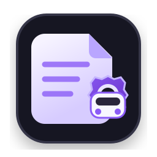
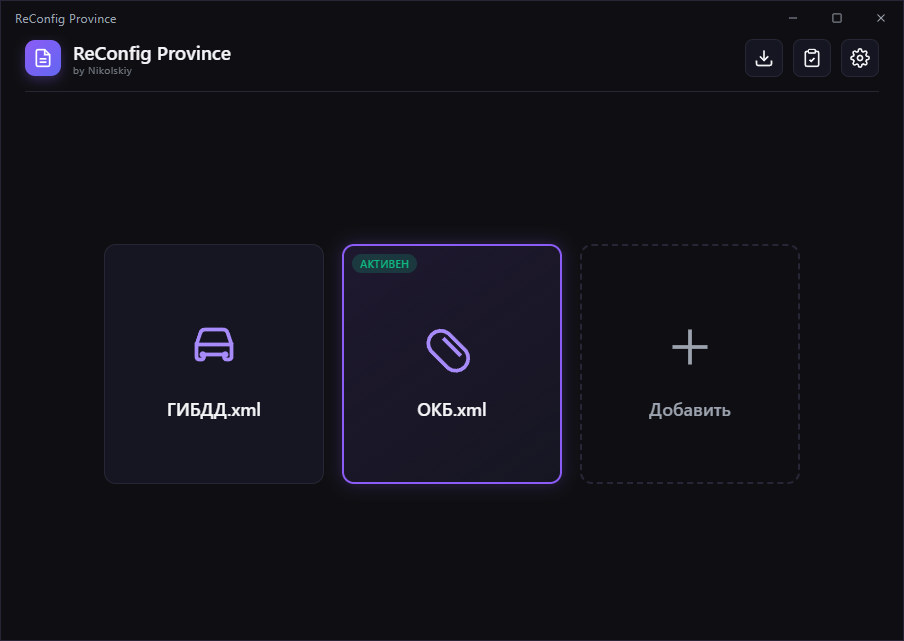

Профили под рукой
Добавляй разные конфиги, задавай им понятные имена и иконки и переключай активный профиль за пару действий.

ReConfig Province by NikolskiyСохраняй профили, переключай игровые конфиги, редактируй файл конфига и применяй готовые бинды через удобное приложение.

ReConfig Province помогает держать разные варианты настроек отдельно и быстро применять нужный профиль. Всё управление собрано в одном компактном окне.
Добавляй разные конфиги, задавай им понятные имена и иконки и переключай активный профиль за пару действий.
Применяй подготовленные наборы биндов с нужными параметрами без долгого ручного редактирования конфига.
Приложение само проверяет наличие новой версии, показывает изменения и при необходимости обновляется с перезапуском.
Сохраняй разные профили и применяй нужный без ручного копирования файлов.
Просматривай и изменяй содержимое сохранённого файла прямо внутри приложения.
Используй готовые наборы назначений с добавлением или заменой конфликтующих клавиш.
Выбирай готовый акцентный цвет или создавай собственный через встроенную палитру.
Обычные обновления можно отложить, а важные версии устанавливаются автоматически при запуске.
Получаем информацию об актуальной версии…
Список обновляется автоматически после публикации новой версии программы.
Нет. ReConfig Province распространяется как самостоятельный файл для Windows. Достаточно скачать и запустить программу.
Пользовательские настройки и сохранённые конфиги хранятся отдельно от самой программы, поэтому обновление приложения их не удаляет.
Сайт автоматически получает опубликованные версии программы. После выпуска обновления оно появляется здесь без ручного изменения страницы.